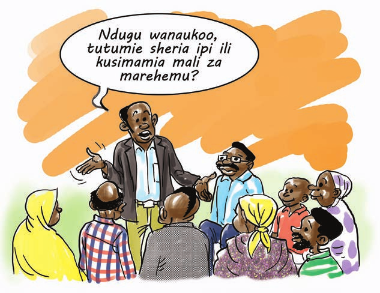
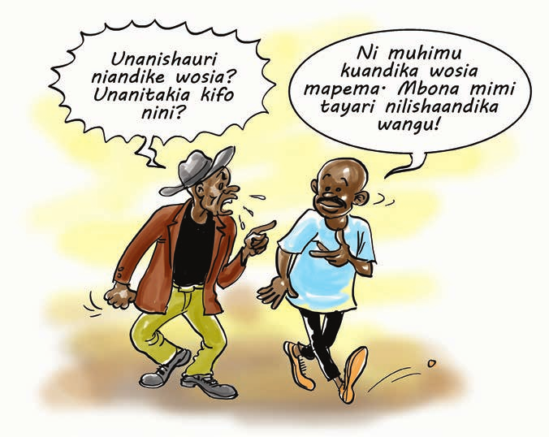

Kujenga uwezo wa washiriki juu ya dhana ya jinsia na ukatili wa kijinsia katika jamii
Baada ya kukamilika mada hii, washiriki watafahamu;
Sehemu ya Kwanza - Jinsia
Mwezeshaji andika kwenye bango kitita neno Mirathi na Taratibu za Ufunguzi wa Mirathi, kisha;
Baada ya kujibu maswali haya, washiriki wafanye uwasilishaji. Makundi yote yakimaliza uwasilishaji unaweza kutoa muda kiasi kupokea mchango wa pamoja kutoka kwao.
Mwezeshaji fafanua kuwa Mirathi ni mali aliyoacha marehemu kwa ajili ya kurithishwa warithi wake halali. Eleza kuwa sheria imeweka taratibu maalum zinazoongoza ukusanyaji, uangalizi, usimamizi, ugawaji na umiliki wa mali za marehemu pamoja, na kulipa madeni aliyoacha marehemu wakati wa uhai wake au gharama zitokanazo na mazishi yake.
Sisitiza kuwa lengo kuu la sheria za mirathi ni kutoa utaratibu wa kusimamia mali za marehemu baada ya kifo chake ikiwamo kuhamisha umiliki wa mali hizo kutoka kwa marehemu kwenda kwa watu wenye haki ya kuzipata mali hizo. Nia hasa ni kwamba mali alizoacha marehemu zisibaki zikiharibika na kupotea bure, au warithi halali au watu wenye maslahi na mali za marehemu, kwa mfano wale wanaomdai hawapotezi haki hiyo. Awepo mtu ambaye atazisimamia na kuzigawa kwa wahusika wakiwamo wadai kuepusha mgongano katika jamii husika.
Sheria zinazohusu urithi na wosia (mirathi) hapa Tanzania zimegawanyika katika sheria za aina tatu ambazo ni;
Sheria ya Kiserikali ni Sheria ya Urithi ya India ya mwaka 1865. Sheria hii ilianza kutumika nchini India tangu mwaka 1865 lakini ililetwa Tanzania (wakati huo Tanganyika), na Serikali ya Wakoloni wa Kiingereza. Sheria hii inaongoza na kusimamia mgawanyo wa mali za marehemu pale ambapo itaonekana kwamba marehemu alikuwa hafuati Sheria za Kiislam wala Sheria za Kimila au kama ni waislamu hawataki sheria ya dini yao kutumika katika mirathi.
Mgawanyo wa mali kwa kutumia sheria hii huwa hivi;
Angalizo: Mgawanyo wa mali kwa mujibu wa sheria hii hufanyika pale tu ambapo marehemu hakuacha wosia. Kama kuna wosia mali zitagawanywa kwa mujibu wa wosia.
Kwa mujibu wa sheria hii watoto wa nje ya ndoa hawana haki ya kurithi isipokuwa tu kama kuna wosia na katika wosia huo wawe wamerithishwa mali. Ikumbukwe kuwa mgawanyo wa mali kwa mujibu wa sheria hii hufanyika tu pale ambapo imethibitika kwamba ni kweli marehemu alikuwa ameacha kabisa kuishi kwa kufuata mila na desturi za jamii yake na pia hakuacha wosia unaolekeza namna mali yake itakavyogawanywa pindi atakapofariki.
Mwaka 1963, serikali ilitoa tamko la kuzitambua sheria za mila za urithi na wosia kupitia Tangazo Rasmi la Serikali Namba 436 la mwaka 1963. Sheria hii hutumika kwa wananchi wote wa Tanzania ambao si wa asili ya Asia, Ulaya au Wasomali na ambao katika maisha yao walifuata taratibu au sheria za kimila. Hivyo basi, ikibainika na kuiridhisha mahakama kwamba wakati wa uhai wake marehemu aliishi kwa kufuata mila na desturi za kabila lake, basi mirathi itafuata sheria za mila za hilo kabila.
Ikiwa sheria ya kimila itatumika, urithi hufuata upande wa ukoo wa kiumeni. Warithi huwa ni watu wanaoangukia katika vyeo vya aina tatu;
Cheo hiki hushikwa na warithi wafuatao;
Cheo hiki hushikwa na watoto wote wa kiume waliosalia ambao hurithi sehemu kubwa kuliko watoto wa kike ambao huhesabika kama daraja la tatu.
Cheo hiki ndio cha mwisho na kinajumuisha watoto wa kike wote bila kujali tofauti ya umri na nafasi ya mama zao katika ndoa. Hawa hupata sehemu ndogo kuliko watoto wa kiume. Kama watoto wa kiume hawapo basi watoto wa kike huongezewa urithi.
Zingatio Muhimu: Sheria ya ardhi ya vijiji Na. 5 ya mwaka 1999 imesahihisha utaratibu wa umiliki ardhi wa kimila (urithi wa ardhi) kwa kuondoa ubaguzi wa aina yeyote kwenye umiliki wa ardhi na kuweka usawa kwa wanawake na wanaume.
Sheria hiyo ya Ardhi inaeleza kuwa sheria yoyote ya kimila inayowanyima wanawake, watoto au watu wenye ulemavu uhalali wa kumiliki mali, kutumia au kupata ardhi, basi sheria hiyo ya mila itakuwa batili. Kwa misingi hiyo, cheo cha tatu cha urithi kwenye sheria za kimila kinakuwa batili pale urithi wa mali ya marehemu unapogusa suala la ardhi (wanaume na wanawake watagawana sawa ardhi ya urithi) kwa mujibu wa sheria ya ardhi ya mwaka 1999.
Utaona kuwa katika sheria ya kimila ambayo iko katika Tangazo la Serikali Namba 436 la Mwaka 1963, wajane hawaruhusiwi kurithi mali za marehemu waume zao. Sheria hiyo inasema kuwa mjane mwenye watoto inabidi aishi kwa kutegemea watoto wake. Mjane ambaye hana watoto atabaki katika nyumba ya marehemu na kupewa asilimia 20 ya nusu ya mali ya marehemu na kuitumia wakati wa uhai wake. Akifariki au akiolewa na mtu mwingine nje ya ukoo mali hiyo na nyumba aliyokuwa anakaa hugawiwa kwa warithi halali wa marehemu mume wake. Sheria hii pia inasema, mume hawezi kurithi mali ya mke wake katika urithi usio na wosia, isipokuwa pale tu ambapo mke hakuacha watoto na hakuacha kabisa mtu yoyote katika ukoo wake. Sheria hii kwa sasa inakosa uhalali wa Kikatiba kwa kuwa haki za binadamu zinataka usawa bila ya ubaguzi.
Sheria ya mila inatamka kuwa watoto waliozaliwa nje ya ndoa hawaruhusiwi kurithi ila wanaweza kurithi endapo marehemu aliacha wosia unaowapa haki ya kurithi au ikiwa walihalalishwa na marehemu kabla ya kufa. Hata hivyo, mtoto wa kwanza wa kiume aliyezaliwa nje ya ndoa na kuhalalishwa, hawezi kuwa mrithi daraja la kwanza bali atarithi katika daraja la pili.
Sheria ya Kiislamu ya Mirathi ni kama ilivyoanishwa katika vifungu mabalimbali vya Kuruani Tukufu na kufafanuliwa katika Makala mbalimbali za wanazuoni wa Kiislamu. Hapa Tanzania Bara, Sheria ya Kiislamu ya mirathi imeanishwa katika Tamko la Sheria za Kiislamu la mwaka 1967 (The Statements of Islamic Law, GN 222 of 1967). Tamko hili pamoja na kwamba halijawahi kutumika rasmi, ni mwongozo mzuri wa hizo sheria. Kama mirathi yeyote ile, mgawanyo wa mali ya marehemu kwa mujibu wa Sheria ya Kiislamu, huzingatia mambo muhimu matatu yafuatayo,
Kwamba:
Kabla ya mirathi lazima matatizo yafuatayo yawe yametatuliwa kwanza:
Kulingana na mafundisho ya dini ya Kiislamu, wanazuoni wote kwa ujumla wanaafiki kuwepo kwa makundi yafuatayo kuwa ndio warithi halali kwa mujibu wa dini ya Kiislamu;
Mgawanyo wa urithi upo kama ifuatavyo:-
Watoto waliozaliwa nje ya ndoa hawana haki ya kurithi kwa baba yao
Angalizo:Izingatiwe kwamba mgawanyo wa mali kwa mujibu wa dini ya Kiislamu, hufuata matabaka kama yalivyobainishwa hapo juu. Kulingana na Sheria ya Kabidhi Wasii Mkuu, endapo mtu atakufa bila kuwa na mrithi, au kwamba mali yake inaweza kupotea, basi hiyo mali itawekwa chini ya Kabithi Wasii Mkuu, na endapo utapita muda wa miaka kumi na mbili (12) bila mtu yeyote kudai kitu chochote kuhusu mirathi hiyo, basi KabidhiWasii Mkuu ataihamishia mali hiyo Serikalini
Mwezeshaji fafanua kuwa katika sehemu hii tunaangalia taratibu za kufuata ili kufungua mirathi. Sisitiza kwamba ni vema ifahamike kwa washiriki wote kwamba, kama marehemu ameacha mali ambayo inatakiwa kurithiwa ni lazima mirathi ifunguliwe mahakamani ili kupata barua ya usimamizi wa mirathi. Si halali kugawanya au kuuza mali za marehemu bila kufuata utaratibu huu.
Barua ya kuomba usimamizi wa mirathi lazima itaje;
Hata hivyo, endapo kunahitajika kufungua mirathi, ni vizuri kwenda mahakamani ili kupata fomu maalum ya kujaza. Mtu anaweza kufungua mirathi katika mahakama ya mwanzo, Wilaya au hata ya Hakimu Mkazi.
Maombi ya usimamizi wa mirathi lazima yaeleze bayana juu ya yafuatayo;
Msimamizi wa mirathi anawajibika;
Fahamu Kuwa: msimamzi wa mirathi sio lazima awe ndugu na awe binadamu. Msimamizi wa mirathi aweza kuwa taasisi au ofisi fulani kama vile Benki ili mradi taasisi hiyo iweze kufanya zoezi la kugawanya mali za marehemu kadri ndugu na warithi watakavyopenda kwa kuzingatia haki na sheria. Hata hivyo, taasisi za serikali kama vile Kabidhi Wasii Mkuu au Mdhamini wa Umma hawezi kuteuliwa kushughulikia mirathi inayotawaliwa na sheria za kimila au kiislamu. Kwa mujibu wa Sheria ya Kabidhi Wasii Mkuu, Sura ya 27 na Sheria ya Mdhamini wa Umma, Sura ya 31 taasisi hizo zinashughulikia mirathi ambayo sheria inayotumika sio ya kimila au kiislamu bali ni sheria ya kiserikali.
Mambo yafuatayo sharti yazingatiwe katika kufungua mirathi endapo kuna wosia;
Barua ya kuomba usimamizi wa mirathi lazima itaje;
Hata hivyo, ni vyema kufahamu kuwa;
Angalizo: Baadhi ya sheria za urithi zinawakandamiza wanawake, wajane na watoto wa kike. Ni vema wakati wa kugawa mali ya urithi kuachana na mila na desturi ambazo zinabagua na kumkandamiza mwanamke.
Kumbuka: Sheria ya Ardhi inaeleza kuwa sheria yoyote ya kimila inayowanyima wanawake, watoto au watu wenye ulemavu uhalali wa kumiliki mali, kutumia au kupata ardhi, basi sheria hiyo ya mila itakuwa batili.
Zingatia: Mirathi inayofuata sheria za mila na au dini ya Kiislamu hufunguliwa katika mahakama za mwanzo
Mwezeshaji wasomee washiriki kisa mafunzo kifuatacho;
Bwana Kashumbi Kiiza ni mfanyabiashara maarufu wilayani Kahama mkoani Shinyanga. Kashumbi ana mke aitwaye Bi. Alice Kashozi na amebarikiwa kupata watoto watatu. Pamoja na mafanikio yake kifedha, Bwana Kashumbi huamini kuwa mwanamke ni ndugu wa muda tu eti kwa vile kuachana naye ni muda wowote na kwa hivyo hapaswi kujua mambo yote kutoka kwake hasa katika suala la fedha na maendeleo.
Msimamo huo wa kifikra wa Kahumbi aliupata kwa rafiki zake Bwana Safari na Mujwahuzi na hivyo kumfanya afungue akaunti tatu za siri ukiacha moja tu ambayo mkewe ndiyo aliikuwa akiifahamu.Vile vile alijenga hoteli mjini Mwanza na kufungua sehemu kama nne (4) za kuuza vinywaji na nyama choma bila ya mkewe kufahamu.
Siku moja mnamo majira ya saa 9 usiku, wakati Kashumbi na wenzake wakitoka kwenye starehe, gari walilokuwa wakiendesha liliingia chini ya uvungu wa Scania bovu lililoegeshwa barabarani. Kashumbi na wenzie walifariki palepale.
Baada ya kumaliza kisa mafunzo hiki washiriki wajibu yafuatayo;
Mwezeshaji fafanua kuwa kutokana na ukweli kwamba mwanadamu hapa duniani ni kiumbe wa kupita tu na kwamba mara nyingi kifo hutokea kwa kushtukiza, ni vyema mwanadamu akajitayarisha kwa kuusia mali yake, ili pindi kifo kikimchukua, mali hiyo igawiwe kadri muusia alivyotaka na hivyo kuwaondolea warithi migogoro isiyokuwa ya lazima. Njia pekee na nzuri ya kuusia mali ni kwa kuacha wosia.
Mara nyingi wosia huchukuliwa na baadhi ya watu kama ni uchuro, kwa maana kwamba unaanza kujitabiria kifo chako. Wengine huona kuwa wosia hauna umuhimu kwa kuwa kuna uwezekano mkubwa wa kuvuja. Fikra hizi sio sahihi na hazisaidii chochote kwani kuandika wosia sio kufungua mlango wa mauti bali ni kuhakikisha utashi wako unafuatwa katika kurithisha mali zako kwa watu unaofikiri wanastahili.
Mara kadhaa familia nyingi zimejikuta zikiingia kwenye mogogoro juu ya mali aliyoiacha marehemu mara baada ya kifo chake, pengine hata kupelekea kuwepo na uhasama na hatimaye kuharibu hata uhusiano kati ya wanandugu. Mara nyingi watoto na mjane au wajane ndio huathirika zaidi na migogoro ya mirathi.
Wosia ni kauli inayotolewa na mtu wakati wa uhai wake kwa hiari yake kuonyesha nia yake jinsi gani angependa mali yake igawanywe baada ya kufa kwake.
Wosia unaweza kuwa wa namna mbili;
Wosia wa maandishi ni lazima;
Angalizo: Wosia wa maandishi waweza kubadilishwa kwa wosia mwingine wa maandishi unaotaja kubadilisha wosia wa kwanza na unaofuata hatua zile zile kama ilivyoainishwa hapo juu.
Wosia wa mdomo lazima;
Ikumbukwe kuwa: Sheria inaweka bayana kwamba kuandikisha wosia sio lazima, bali ni hiari ya muusia. Pia kwamba wosia wa mdomo hauwezi kufuta au kubadilisha wosia wa maandishi, lakini wosia wa maandishi waweza kufuta au kubadilisha wosia wa mdomo ikiwa waliokuwa mashahidi wa wosia wa mdomo watashiriki.
Wosia waweza kubatilishwa ikiwa itathibitika kwamba muusia amepungukiwa akili kwa sababu ya wazimu, ugonjwa, ulevi au hasira ya gafla. Ni muhimu kukumbuka kwamba ni wahusika tu (warithi), wanaoruhusiwa kupinga wosia kwa sababu zilizotajwa hapo juu,
Kulingana na Sheria ya Usimamizi wa Haki na Matumizi ya Sheria mbali mbali, Sura ya 358, muusia anaweza kuusia mali yake yote bila kutaja kila kitu alichonacho wakati wa kufa kwake. Ikiwa muusia anapenda kuusia sehemu tu ya mali yake, basi sehemu iliyobaki itagawanywa kulingana na masharti ya urithi usio na wosia.
Kwa mujibu wa Sheria ya Usimamizi wa Haki na Matumizi ya Sheria mbalimbali, Sura ya 358, muusia anaweza kumnyima mrithi urithi wake ikiwa mritihi;
Kwa mujibu wa Sheria ya Kusimamia Mirathi ya Mali Ndogondogo, Sura ya 30, dini sio sababu ya kumnyima mrithi urithi.
Ikumbukwe kuwa: Muusia akimnyima mrithi urithi wake, lazima ampe nafasi ya kujitetea mbele yake au Baraza la Ukoo, na lazima atoe sababu za kumnyima urithi. Mrithi baada ya kujua amenyimwa urithi akikaa kimya bila ya kujitetea mbele ya mtoa urithi au Baraza la Ukoo, hawezi tena baadaye kupinga huo wosia. Kama mrithi hakuwa na habari za kunyimwa kwake urithi, atatoa malalamiko yake kwenye Baraza la Ukoo ambalo litamsikiliza na linao uwezo wa kukubali au kukataa. Ikibainika kwamba muusia alimnyima mrithi urithi kimakosa, wosia utabadilishwa na urithi utagawanywa kulingana na urithi usio na wosia
Wosia una faida zifuatazo;
Zingatio: Wosia ugusie mali za marehemu tu. Wosia wowote ambao unarithisha mali zisizokuwa za marehemu au ambazo zilikuwa zinamilikiwa na marehemu pamoja na mtu mwingine kwa namna ya maslahi yasiyogawanyika wosia huo hautakuwa halali.
Wosia waweza kutunzwa mahali popote palipo na usalama na ulinzi wa kutosha, ili kuepuka kughushiwa. Watu wengi huchagua kutunza katika sehemu zifuatazo;
Imetiwa saini hapa ............................................................
Siku ya ....................................................................................
Mwezi wa.......................................... mwaka ...........................
Saini ya mwosia.........................................................
Jina: ................................................................................................
Saini: ................................................................................................
Anuani: .............................................................................................
Kazi: ................................................................................................
Jina: ................................................................................................
Saini: ................................................................................................
Anuani: .............................................................................................
Kazi: ................................................................................................
Mbele ya .............................................................................................
Mshuhudi viapo/Saini : ........................................................................
Mwezeshaji andika majibu ya washiriki kwenye bango kitita au mbao za ubaoni na utoe ufafanuzi zoezi hili likiisha.
Mwezeshaji eleza kuwa ndani ya siku thelathini (30) tangu alipofariki marehemu wahusika wanapaswa kusajili kifo cha marehemu kwenye Ofisi ya Vizazi na Vifo ambayo iko kwa Mkuu wa Wilaya wa kila wilaya Tanzania Bara. Kama wahusika watachelewa kusajili kifo ndani ya siku (30), basi wafike kwenye Ofisi hiyo ya vizazi na vifo kwa maelezo.
Kifo kinasajiliwa kwenye Ofisi ya Mkuu wa Wilaya iliyopo mahali kilipotokea, na sio katika wilaya yeyote ile. Kama kuna matatizo kuhusu wapi kifo kisajiliwe, wahusika wanaweza kuwasiliana na msajili Mkuu wa Vizazi na Vifo, Makao Makuu, Dar es Salaam.
Ili mwombaji aweze kupewa usimamizi wa mirathi lazima maombi yake yazingatie na kutaja kwa kiwango cha kuithibitishia mahakama haya yafuatayo;
Baada ya kuwasilisha maombi ya mirathi, mahakama kwa kawaida hutoa tangazo la mirathi kwa muda wa siku 90 kwenye Gazeti la Serikali linalosomwa na watu wengi au katika mbao za matangazo za mahakama. Lengo ni kuwawezesha wale wasioridhika na usimamizi huo kupeleka pingamizi mahakamani. Vile vile mahakama ina uwezo wa kufupisha kipindi hiki cha Tangazo la siku 90, kwa kutoa tangazo la muda mfupi zaidi,
Baada ya kuwasilisha maombi ya mirathi mahakamani, mahakama kwa kawaida hujaza fomu za “Taarifa ya Kawaida” kulingana na mahakama ambako mirathi hiyo imefunguliwa.
Angalizo: Lengo la kuweka muda huo wa tangazo ni kuwawezesha wale wasioridhika na usimamizi huo kupeleka pingamizi mahakamani na kuzuia mtu huyo asipewe usimamizi wa mirathi au asiteuliwe kuwa mtekelezaji wa wosia (mirathi) ya marehemu. Hata hivyo Mahakama ina uwezo wa kufupisha kipindi hiki cha tangazo la siku 30 au 90, kwa kutoa tangazo la muda mfupi zaidi.
Mwombaji ambaye sasa ni msimamizi wa mirathi ya marehemu atalazimika kutekeleza, na/au kuendeleza taratibu za kugawa mali za marehemu kama ifuatavyo;
Lengo la kutoa tangazo la mirathi katika gazeti la serikali (Ndani ya kipindi cha siku 90 au pungufu (chini ya hapo), au taarifa ya kawaida (ndani ya kipindi cha siku 30 au pungufu (chini ya hapo), ni kutoa fursa kwa yeyote asiyeridhika na kuthibitishwa kwa mtekelezaji wosia ama kuteuliwa kwa msimamizi wa mirathi, kupeleka pingamizi lake mahakamani.
Kwa njia ya pingamizi, mtoa pingamizi hutoa sababu za kupinga uthibitishwaji au uteuliwaji wa mtekelezaji au msimamizi wa mirathi ya marehemu. Baada ya kuwasilisha pingamizi mahakamani, maombi ya mirathi huchukua mfumo wa shauri la kawaida la daau na mwombaji wa mirathi hupewa muda wa kujibu malalamiko ya mweka pingamizi. Hivyo mahakama husikiliza pingamizi hilo na inaporidhika na sababu zitolewazo katika pingamizi, inaweza kubatilisha uthibitishwaji wa mtekeleza mirathi au kukataa uteuzi wa mwombaji usimamizi wa mirathi
Hata kama muda wa kuwasilisha pingamizi utapita na mahakama ikamthibitisha au kumteua mtekelezaji au msimamizi wa mirathi, endapo itathibitika kwamba kulikuwapo na kughushi ,au udanganyifu kuhusiana na usimamizi, au utekelezaji wa mirathi, basi maombi yanaweza kupelekwa mahakamani kutaka mtekelezaji au msimamizi aondolewe na/ au usimamizi wake kutenguliwa.
Je, ni wakati gani Mahakama inaweza kubatilisha uthibitishwaji wa Mtekeleza mirathi au kukataa uteuzi wa Msimamizi wa mirathi?
Kifungu namba 49(1) cha Sheria ya Mirathi na Usimamizi wa Mali ya Marehemu, (Probate and Administration of Estate Act,) Sura ya 352 kinaeleza kuwa Mahakama yaweza kubatilisha uthibitishwaji wa mtekelezaji mirathi au kufuta uteuzi wa msimamizi wa mirathi, endapo itabaini yafuatayo;
Ikiridhika kwamba mirathi imeendeshwa kinyume na taratibu sahihi zinazoongaza mirathi kisheria na /au kinyume cha masilahi ya warithi, mahakama huwafutia uthibitishwaji au uteuzi, mtekelezaji au msimamizi wa mirathi na badala yake huagiza mtu mwingine ateuliwe na kupewa madaraka ya usimamizi wa mirathi hiyo.
Wakati maombi ya kuomba usimamizi au utekelezaji wa mirathi yanaendelea mahakamani, mwombaji anaweza kuiomba mahakama impe usimamizi wa mirathi wa muda.
Msimamizi aliyepewa usimamizi wa muda anakuwa na majukumu sawa na msimamizi aliyethibitishwa au kuteuliwa na mahakama ya kukusanya na kutunza mali ya marehemu, isipokuwa hawezi kugawa mali ya marehemu kwa warithi. Lengo la kutoa usimamizi huu wa muda, ni kuwawezesha kutimiza majukumu ya haraka kama vile matunzo kwa watoto na mjane.
Endapo mtu ameomba kuthibitishwa au kuteuliwa kuwa mtekelezaji au msimammizi wa mirathi, mahakama inao wajibu wa kuchunguza kwa makini na kujiridhisha kwamba mtu huyo anayeomba kuthibitishwa au kuteuliwa kuwa mtekelezaji au msimamizi wa mirathi, anayo maslahi katika mirathi hiyo na ataweza kufanya kazi hiyo kwa makini na uaminifu mkubwa kulingana na matakwa ya marehemu (kama yanaweza kubainika) katika kusimamia mali hizo.
Kadiri ya Jedwali la tano la Sheria ya Mahakama za Mahakimu na fungu la 99 la Sheria ya Mirathi na Usimamizi wa mali za marehemu, mtekelezaji au msimamizi wa mirathi ya marehemu ndiye mwakilishi wa marehemu kisheria na mali zote za marehemu ziko mikononi mwake. Hivyo mtekelezaji au msimamizi wa mirathi ya marehemu anao wajibu na au majukumu kama inavyoainishwa hapa chini;
Angalizo Muhimu: Msimamizi wa mirathi yeye siyo mrithi wa mali ya marehemu. Maana kumekuwepo na dhana potofu kwa watekelezaji au wasimamizi wa mirathi walio wengi, kwamba baada ya mtu kuthibitishwa au kuteuliwa kuwa mtekelezaji au msimamizi wa mirathi, basi amerithishwa mali hizo moja kwa moja na anaweza akafanya anavyotaka juu ya mali hizo. Kisheria jambo hilo si la kweli na hiyo ni dhana potofu. Baada ya kuteuliwa au kuchaguliwa kuwa msimmizi wa mirathi, anao wajibu wa kukusanya mali na kuzigawa kwa warithi halali wa marehemu, katika muda uliopangwa na kutoa taarifa mahakamani kwamba zoezi hilo limefanyika salama na limekamilika. Kinyume na hapo, anatenda kosa la jinai.
Endapo mtekelezaji au msimamizi wa mirathi amesimamia au ametumia mirathi ya marehemu vibaya, warithi halali wa marehemu, pamoja na mambo mengine, waweza kufanya yafuatayo;
Hapa Tanzania mambo yanayohusu mirathi hayapo katika sheria moja, ingawa hiyo ni sheria nyeti na ina mguso mkubwa katika jamii. Jambo hili limesababisha utata mkubwa katika kuchagua sheria ipi itumike na wakati mwingine kusababisha baadhi ya wanajamii hasa wajane na wanawake kupoteza haki yao ya urithi.